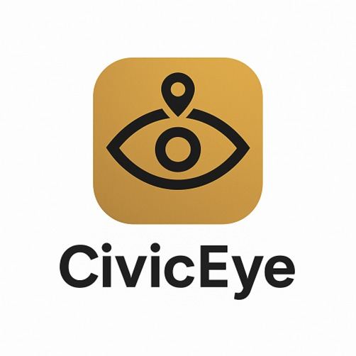

Dept. of AI & Data Science | 2022–2026 Batch
FINAL REVIEW 2026
Puducherry, India

ACHARIYA COLLEGE OF ENGINEERING TECHNOLOGY
Approved by AICTE, New Delhi | Affiliated to Pondicherry University
Department of Artificial Intelligence & Data Science | 2022–2026 Batch

Final Year Project 2025-26
World Class Education
CivicEye: An AI-Driven Computer Vision System
for Autonomous Civic Anomaly Detection,
Prioritization & Expedited Resolution
Real-time YOLOv8 Neural Inferencing | Hybrid GPS + EXIF + OCR Geo-Extraction | Predictive Severity & Cost Modeling
Project Guide
Mrs. P. Akila Devi
Assistant Professor, AI&DS
akiladevi.career@gmail.com
Mr. Sakthivel S M
22TP0017
Mr. Harish Kumar S
22TP0009
Mr. Loga Jothy V
22TP0013